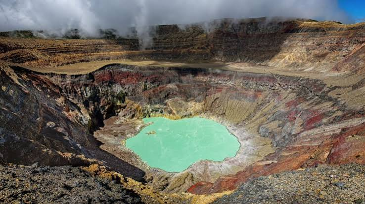

Senderismo
El ascenso al volcán permite disfrutar de un recorrido rodeado de naturaleza y paisajes volcánicos. Es una actividad ideal para quienes buscan una experiencia de aventura al aire libre.

Uno de los paisajes naturales más impresionantes de El Salvador
El Volcán de Santa Ana, también conocido como Ilamatepec, es uno de los destinos naturales más destacados de El Salvador. Su paisaje volcánico, sus vistas panorámicas y su impresionante cráter lo convierten en un lugar atractivo para quienes disfrutan de la naturaleza, el senderismo y la aventura.
Descubre algunas de las actividades y atractivos que puedes encontrar durante una visita al Volcán de Santa Ana.
El ascenso al volcán permite disfrutar de un recorrido rodeado de naturaleza y paisajes volcánicos. Es una actividad ideal para quienes buscan una experiencia de aventura al aire libre.

Uno de los principales atractivos del volcán es su impresionante cráter. Desde la parte superior se puede observar el paisaje volcánico y la laguna que se encuentra en su interior.

Durante el recorrido y desde las zonas altas es posible apreciar impresionantes paisajes naturales de la zona occidental de El Salvador, incluyendo otros volcanes y áreas montañosas.
Algunos aspectos que puedes tomar en cuenta antes de realizar tu recorrido por el volcán.

Para realizar el recorrido es recomendable utilizar ropa cómoda, calzado apropiado para senderismo, agua y protección para el sol.
Actividad:
Senderismo.
Recomendación:
Llevar suficiente agua y prepararse para
las condiciones del recorrido.

El recorrido permite observar diferentes paisajes naturales y disfrutar de la vegetación característica de las zonas montañosas de El Salvador.
Ubicación:
Santa Ana, El Salvador.
Recomendación:
Respetar la naturaleza y no dejar basura
durante el recorrido.

Los paisajes del volcán ofrecen diferentes oportunidades para tomar fotografías de la naturaleza, el cráter y las montañas que rodean la zona.
Ideal para:
Fotografías y paisajes.
Consejo:
Llevar el equipo protegido y preparado
para una caminata.
Elige una tour operadora, un guía o el transporte, indica la fecha y el número de personas, y agrega tu reserva al carrito.
Ascenso guiado al cráter con grupo reducido y hora de salida temprana.
$35 por persona
Recorrido por el Parque Nacional Cerro Verde y ascenso al volcán en un solo día.
$55 por persona
Caminata al volcán por la mañana y tiempo libre en el lago por la tarde.
$75 por persona
Acompañamiento durante el ascenso, con explicación del volcán, la flora y la historia de la zona.
$25 por grupo
Ideal para visitantes extranjeros. Explicaciones en dos idiomas durante todo el recorrido.
$40 por grupo
Te lleva a los mejores puntos para fotografiar el cráter, la laguna y las vistas panorámicas.
$45 por grupo

Viaje de ida y vuelta hasta la entrada del parque, con salida por la mañana.
$12 por persona

Vehículo para tu grupo, con conductor que espera mientras haces el recorrido.
$30 por vehículo

Para excursiones escolares, familias grandes o grupos de amigos. Reserva con anticipación.
$120 por vehículo